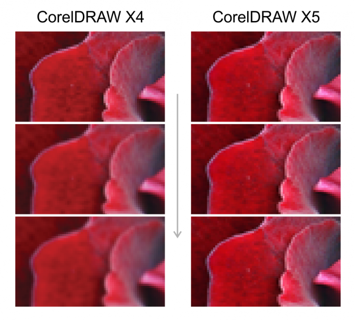

Маленькие приятности в CorelDRAW X5
Sancho / 11.03.2010, 22:39/00:41
Форум:
Что-то забыли о позитиве :) а то всё баги да баги. Итак, предлагаю в этой теме публиковать кто какие фишечки нашёл в новом кореле.
Вот одна:
Как уже известно, в докере трансформ отсутствует кнопка Apply to Duplicate. Вместо неё нам предлагается ввести кол-во копий и нажать кнопку Apply. Однако если зажать Shift и только тогда нажать кнопку Apply, значение в поле Copies игнорируется, и делается только одна копия, как при нажатии Apply to Duplicate в Х4.
Это и в Х4 есть!
Добавлено (01.04.2010, 18:04)
---------------------------------------------
а все, нашел, не сразу вогнался. искьюз ми.

Страницы